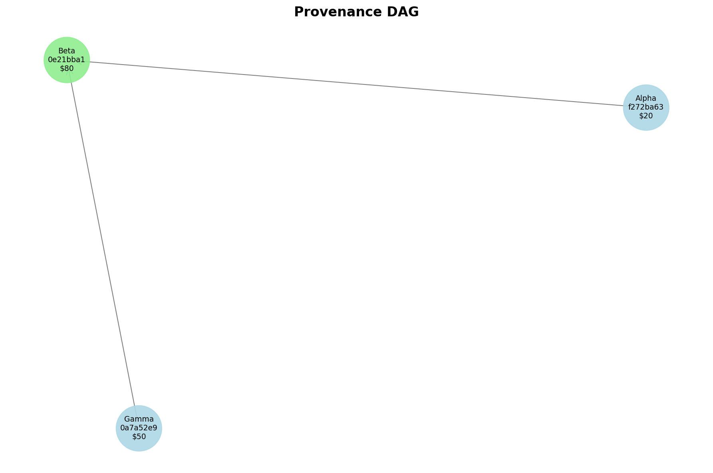
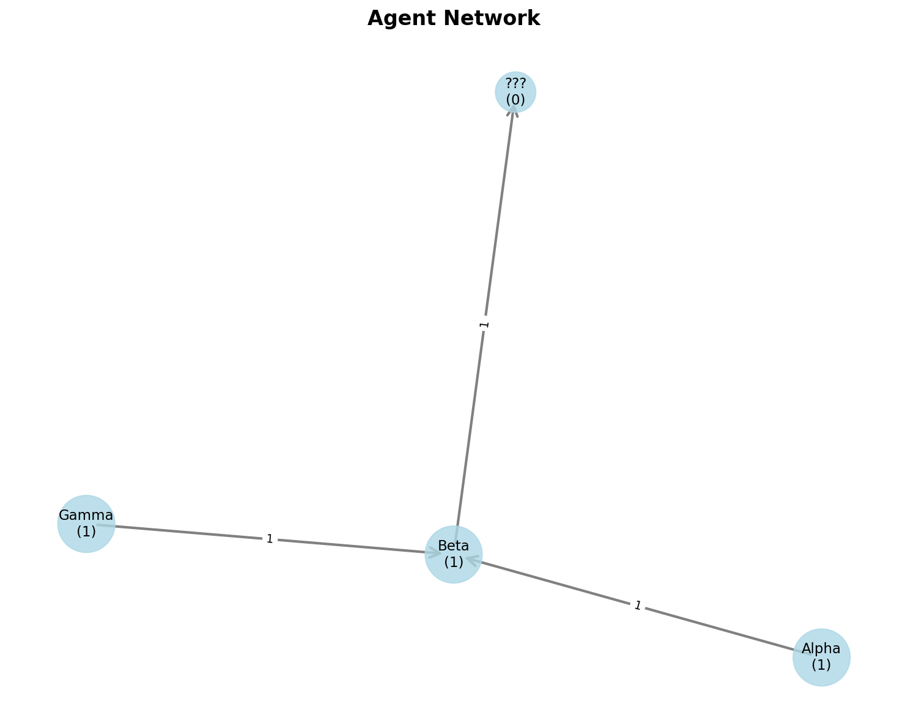
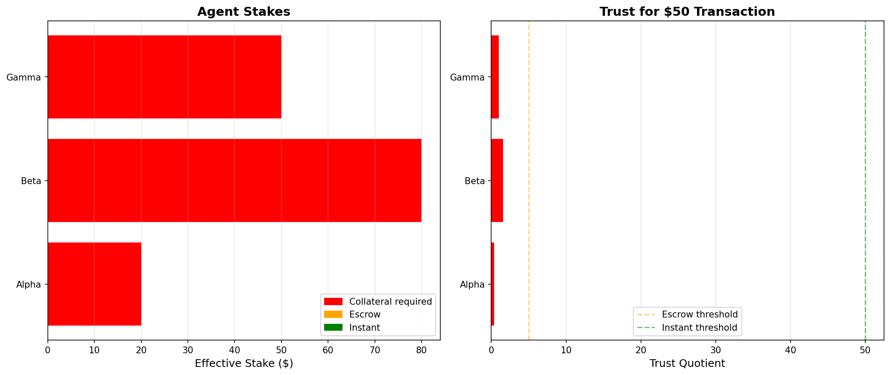
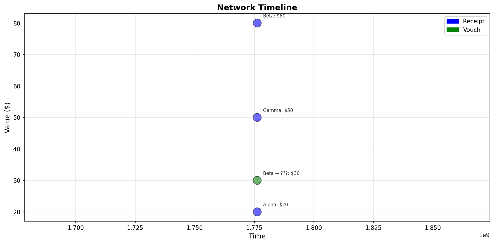

Cryptographically-verified agent compute network
Hash-linked receipts forming a directed acyclic graph. Each receipt cryptographically commits to its parents.

Relationships between agents. Arrow thickness indicates interaction count.

Algorithmic trust computed from work history. Stake = direct value + vouched capital.

Chronological view of all network events.

All receipts are indexed in an append-only Merkle tree. Anyone can verify inclusion.
Every claim is cryptographically verifiable:
No platform. No central authority. Just cryptographic math.
All data is stored in SQLite: network_snapshot.db (73728 bytes)
Query with: sqlite3 network_snapshot.db "SELECT * FROM receipts"